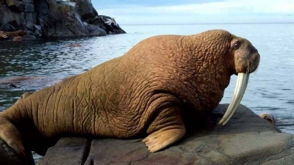

¿Hacia dónde caminan esos elefantes marinos? La respuesta nos la da el Big Data

Los movimientos migratorios de los animales son clave para advertirnos de muchos de las
variaciones que sufre la naturaleza. Algunos de esos cambios son producidos por la mano
irresponsable del hombre, cómo no, y otros por misteriosas razones que solo la misma
naturaleza comprende.
El comportamiento de muchas aves caracterizadas por estos viajes climáticos, por ejemplo,
se ha transformado en los últimos años, y prefieren quedarse en el lugar de reproducción
en vez de retornar a tierras más cálidas porque las temperaturas en esos puntos del planeta
han subido tanto que es demasiado para ellas.
Este dato y muchos más son vigilados por científicos e investigadores. Sin embargo, a veces
resulta muy difícil seguir el curso de los animales y obtener conclusiones significativas.
De hecho, muchos de los estudios que se vienen haciendo parten de a prioris definidos por
suposiciones. O por lo que llaman turning points o puntos de giro, cambios significativos
que realizan los animales en su trayectoria y que se toman como patrones.
“El análisis de grandes datos da pistas sobre el comportamiento de los elefantes marinos”
Ahora, un equipo de investigadores del Instituto de Física Interdisciplinar y Sistemas Complejos (IFISC, UIB-CSIC), en Palma de Mallorca en colaboración con científicos australianos ha logrado analizar los desplazamientos de los elefantes marinos en la Antártida de una forma mucho más precisa y concluyente. ¿Cómo? Con la ayuda de satélites y herramientas de Big Data.
El estudio ha seguido a 272 elefantes marinos durante toda una década registrando cada uno de sus movimientos. De ese modo, no ha sido necesario establecer turning points, sino examinar el comportamiento real del grupo de mamíferos. Este examen aporta datos novedosos sobre la lógica que marca los trayectos de estos animales.
Y es que si normalmente la brújula que marca la dirección de los grupos migratorios son razones extrínsecas como la búsqueda de alimento, en estos elefantes marinos existen además razones intrínsecas que dirigen su destino: la memoria. Mientras que el primero se define por movimientos migratorios más lentos y aleatorios, el segundo se caracteriza por la rapidez y la determinación en la dirección que siguen los animales.
Satélites y Big Data son las herramientas que la tecnología y la innovación pone al servicio de la ciencia, ahora son los estudiosos los que pueden extraer conclusiones y tomar decisiones en base a estos datos obtenidos.
Además, este método no solo ayudará a la observación de esta especie de elefantes marinos, los Mirounga leonina, sino que seguro servirá para otras investigaciones vitales en el estudio de la naturaleza y de los animales del planeta.